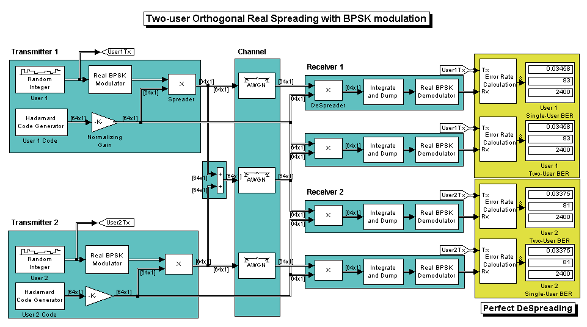
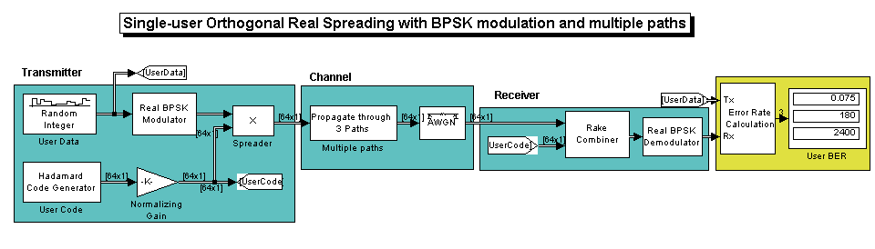
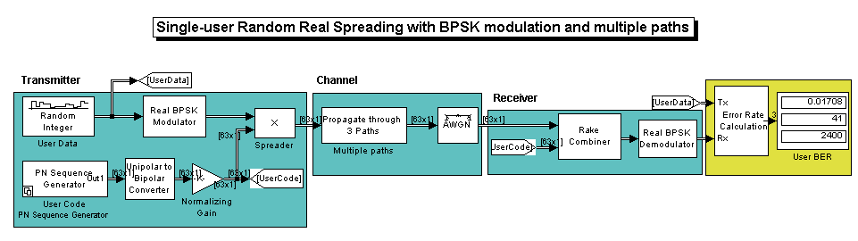
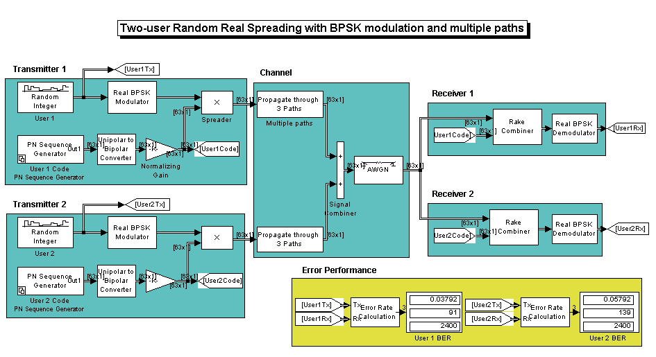

A spread-spectrum communication system is one in which the transmitted signal is spread over a wide frequency band, typically much wider than the minimum bandwidth required to transmit the data. The spreading uses a waveform that appears random to anyone except the intended receiver of the transmitted signal. The waveform is actually pseudo-random in the sense that it can be generated by precise rules yet has the statistical properties of a truly random sequence.
Spreading consists of multiplying the input data by a pseudo-random or pseudo-noise (PN) sequence, the bit rate of which is much higher than the data bit rate. This increases the data rate while adding redundancy to the system. The ratio of the sequence bit rate to the data rate is known as the spreading factor. When the signal is received, the spreading is removed from the desired signal by multiplying it by the same PN sequence that is exactly synchronized to the transmitted PN signal. When such a despreading operation is applied to the interferer's signals, ideally there is no further contribution to the user of interest's signal level. This is achieved in CDMA systems by assigning each user/transmitter distinct codes that have low cross-correlation properties, such as the ideal orthogonal codes or any one of the PN, Gold or Kasami sequences.
The following sections highlight the different sequences, their properties, and the transmission environments in which they yield desirable performance.
This example model compares a single-user system vs. a two-user data transmission system with the two data streams being independently spread by different orthogonal codes.
The model uses random binary data which is BPSK modulated (real), spread by orthogonal codes of length 64 and then transmitted over a AWGN channel. The receiver consists of a despreader followed by a BPSK demodulator.
open_system('mortho_bpsk_2u'); sim('mortho_bpsk_2u');
For the same data, the example model calculates the performance for a two-user transmission along with the single-user transmission for the same channel settings.
Note that for the individual users, the error rates are exactly the same in both cases. This shows that perfect despreading is possible due to the ideal cross-correlation properties of the orthogonal codes selected.
To experiment with this model further, try selecting other codes for the individual users to examine the variations in relative performance.
close_system('mortho_bpsk_2u', 0);
This example models a single-user system in which the signal is transmitted over multiple paths. This is similar to a mobile channel environment where the signals are received over multiple paths, each of which have different amplitudes and delays. To take advantage of the multipath transmission, the receiver employs diversity reception which combines the independent paths coherently.
Note, to keep the system simple, no fading effects are considered here and the receiver assumes knowledge of the number of paths and their respective delays.
open_system('mortho_bpsk_1u_mp'); sim('mortho_bpsk_1u_mp');
For the second user's data transmission with the same spreading code as in Section 1, we now see deterioration in performance when compared with Section 1 (compare the 180 errors with 81 in the previous case). This can be attributed to the non-ideal auto-correlation values of the orthogonal spreading codes chosen, which prevents perfect resolution of the individual paths. As a consequence, we don't see the merits of diversity combining either.
To experiment with this model further, try selecting other path delays to see how the performance varies for the same code. Also try different codes with the same delays.
close_system('mortho_bpsk_1u_mp', 0);
This example model considers pseudo-random spreading for a single-user system in the above multipath transmission environment.
Note, that the spreading factor (63) is almost the same as that used for orthogonal spreading for comparison purposes.
open_system('mrand_bpsk_1u_mp'); sim('mrand_bpsk_1u_mp');
In this case, for a 3-path channel note the gains due to diversity combining (compare 41 errors to 83 in Section 1 and 180 in Section 2). This is made possible by the ideal auto-correlation properties of the PN sequences used.
To experiment with this model further, try a different family of sequences (Gold or Kasami) by selecting a different block choice from the configurable sequence block. For the same sequences, try selecting other path delays to see performance variations.
close_system('mrand_bpsk_1u_mp', 0);
Finally, this model considers pseudo-random spreading for a combined two-user transmission in the same previously chosen multipath environment.
open_system('mrand_bpsk_2u_mp'); sim('mrand_bpsk_2u_mp');
For the two distinct PN sequences used for spreading, note that the individual user performance has now worsened for the same channel conditions (compare 91 errors to 41 from Section 3). This is primarily due to the higher cross-correlation values between the two sequences which prevent ideal separation. Note, there are still advantages to combining as the error rate for a multipath plus AWGN channel with RAKE combining is nearly as good as the AWGN-only case of section 1.
close_system('mrand_bpsk_2u_mp', 0);
Now consider the case where spreading is done by using different Kasami sequences for the two users.
open_system('mrand_bpsk_2u_mp'); set_param('mrand_bpsk_2u_mp/User 1 Code','BlockChoice','Kasami Sequence Generator'); set_param('mrand_bpsk_2u_mp/User 2 Code','BlockChoice','Kasami Sequence Generator'); sim('mrand_bpsk_2u_mp');
You can now see almost perfect user separation (compare 38 errors with 41 from Section 3), over multiple paths with the gains of combining. This can be attributed to the "good" correlation properties of Kasami sequences, which provide a balance between the ideal cross-correlation properties of Orthogonal codes and the ideal auto-correlation properties of PN sequences.
To experiment with this model further, try different pseudo-random sequences (Gold and Kasami) with different sequence indexes, to examine the variations in the error performance.
close_system('mrand_bpsk_2u_mp', 0);